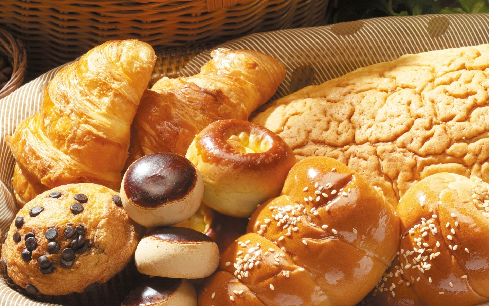

DIVERSAS RECEITAS DE PÃES
Home
Pães Doces
Pães Salgados
Contato

Veja como fazer receitas de pão doce com açúcar cristalizado, doce de leite e muitas outras.
Pão Doce Simples
Pão Doce de Coco
Pão Doce da Vovó
Pão Doce com Recheio de Creme